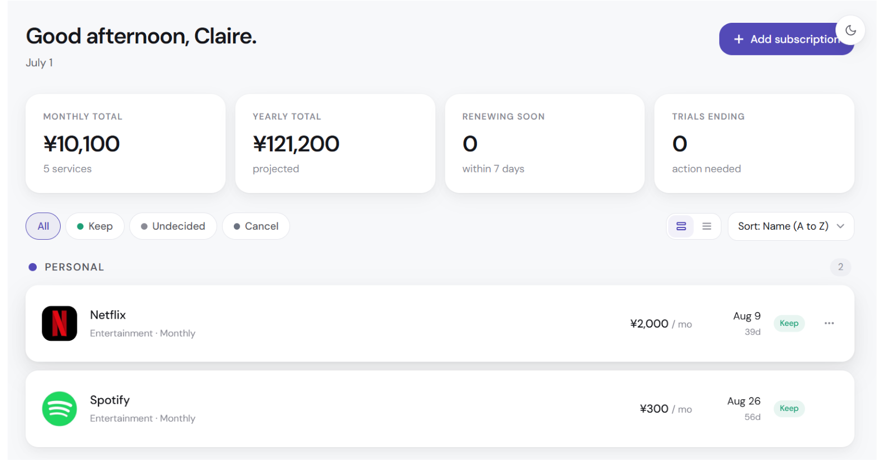
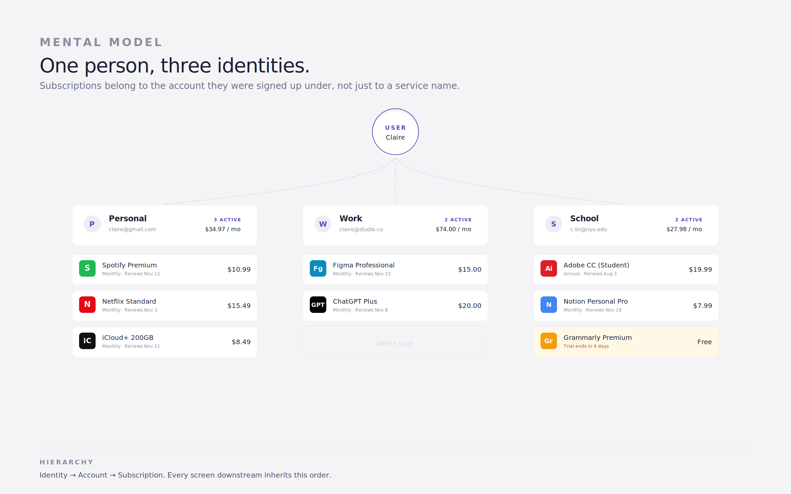
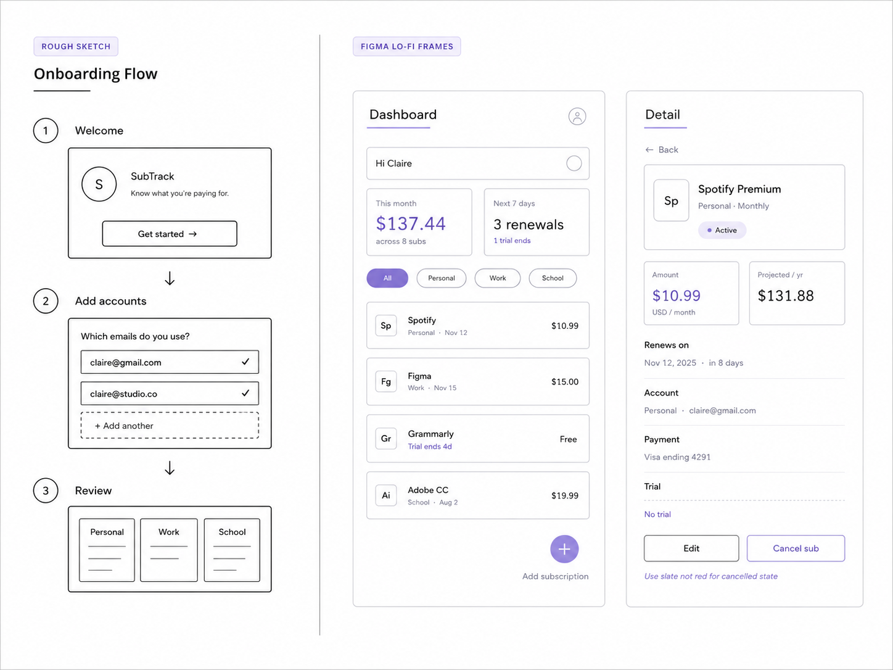
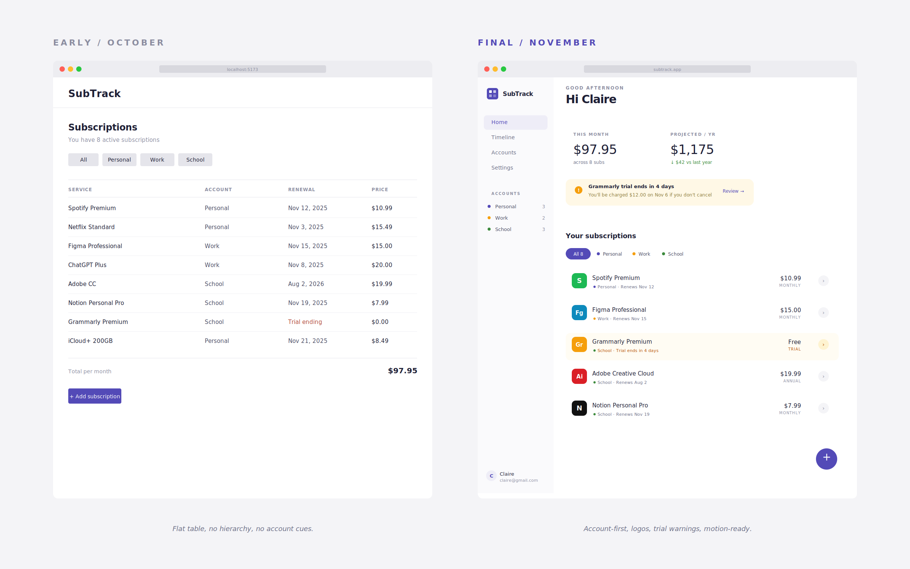
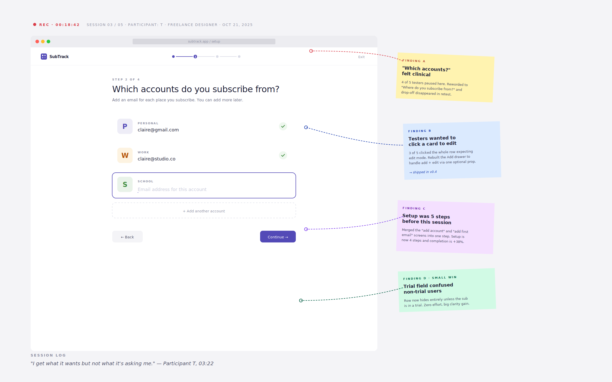
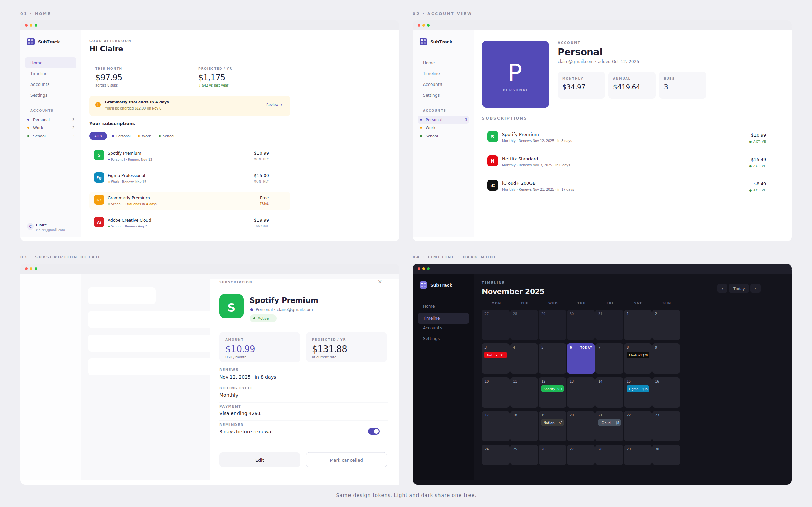
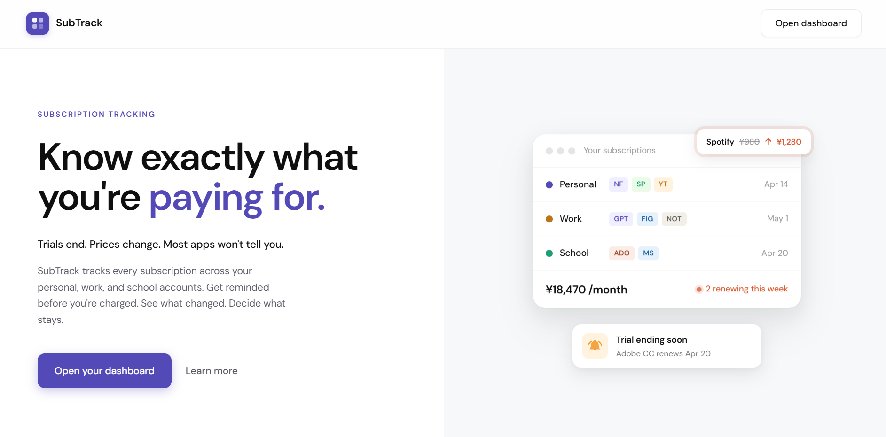

SubTrack
A subscription dashboard built around the question most trackers ignore: which account did I even use?

The SubTrack dashboard in light mode. Subscriptions grouped by the account they were signed up under, not just by service.
01 / Context
The problem no tracker was solving
I started SubTrack because I was the user. As an international student living between contexts, I had subscriptions scattered across three identities: personal email, school email, work email. Spotify on personal. Adobe through school. ChatGPT buried under a work account I barely used. Every month, charges appeared that took a second too long to recognize.
The problem was not carelessness. It was that no tracker on the market matched how people actually live across multiple accounts. Existing subscription managers ask for two things: the service name and the price. What they miss is the layer underneath — which login did I use, is this billed through the App Store or directly, did I already plan to cancel this?
Principle
Account-first architecture. Subscriptions are not just line items — they belong to identities. The dashboard respects that from the first screen.

02 / Process
From sketch to structure
The first sketches were ugly and useful. Three flows on paper: how someone onboards, how someone scans when a charge surprises them, and how someone decides to cancel. These exercises forced an early decision — onboarding had to collect account structure first, or every screen downstream would feel generic.
Setup became a four-step flow that asks for your accounts and email addresses before anything else. The dashboard could then group, filter, and remind based on who you are, not just what you pay for.
I also made an early call to avoid retention dark patterns. Most subscription apps use aggressive red for cancel states, mimicking the manipulative UX of the services people are trying to escape. SubTrack uses muted slate for cancelled states and dims the tile slightly. The decision to not alarm users became part of the brand.


03 / Research
Testing with real users
Once I had a working React prototype, I ran short usability sessions with five people: two students with multiple emails, one freelancer juggling client accounts, and two friends who described themselves as "bad with subscriptions." Each session was 20 to 30 minutes, screen-shared, with a light scenario prompt: imagine you just got charged for something you don't recognize, find it.
Three findings shaped the final build. First, onboarding was originally five steps, four out of five testers stalled at the email-and-account screen because the labels felt clinical. I collapsed two steps into one and added a three-column Review screen. Drop-off disappeared in follow-up sessions.
Second, testers expected to edit a subscription by clicking it, not by navigating to a separate form. I rebuilt the Add drawer to handle both add and edit modes through a single optional prop. Third, the trial date field confused people who did not have trials, so that row now hides entirely unless relevant.
Smaller moments mattered too. Testers asked for the cost projection to disappear on Custom billing cycles. They asked for confirmation modals instead of browser dialogs for destructive actions. Both made it into the build.

04 / Build
Execution
The final app is a fully functional product, not a prototype. The frontend runs on React with Vite, Zustand for state, React Router v6, and CSS Modules. The backend is Express on Node talking to a Supabase PostgreSQL database with Row-Level Security and JWT auth. Every interaction including status changes, reminder toggles, notes, filters, account switching, updates live and persists per user.
The visual language is grounded in a design token system. DM Sans throughout. Indigo as the brand color. A cool neutral background. Depth through layered soft shadows rather than borders. Light and dark modes share the same token tree. The landing page uses a motion loop that demonstrates the product in miniature: subscription rows animating in, a reminder toast, a price-change badge.


05 / Reflection
What I learned
Designing for yourself is the fastest way to clarify a problem and the easiest way to lose perspective. The discipline of running real sessions, even with five people it was the difference between solving my problem and solving the problem.
SubTrack is also the first project where I shipped from research through production code. The gap between a polished mockup and a working, responsive, edge-case-handled app is humbling, and that gap is where most of the learning lives.
Built with
- Design
- Claire Lin
- Research
- Claire Lin
- Engineering
- Claire Lin
- Testing
- Five anonymized participants, May 2026